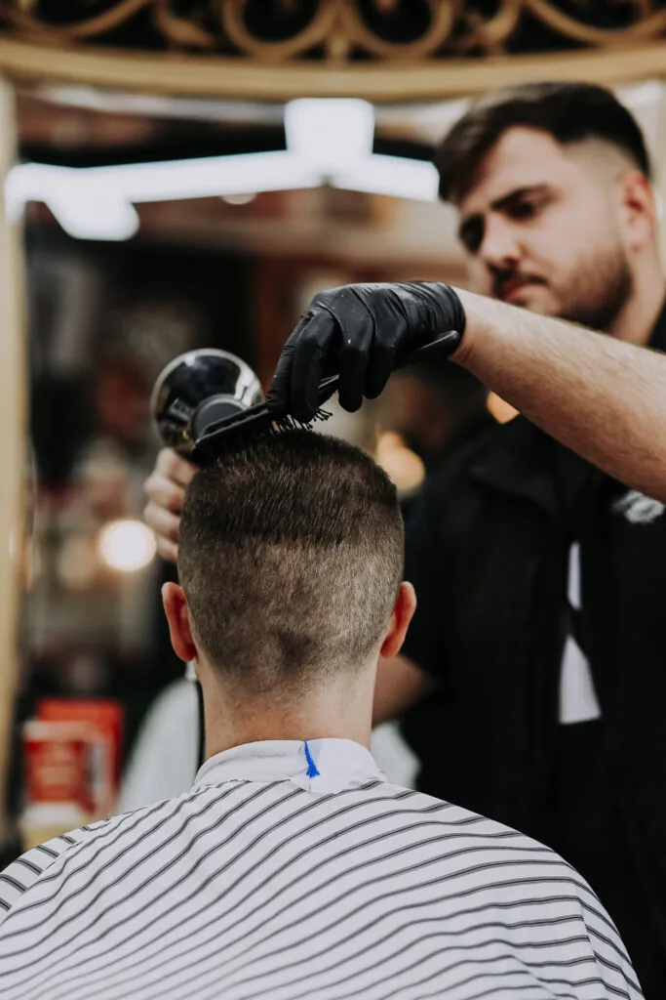
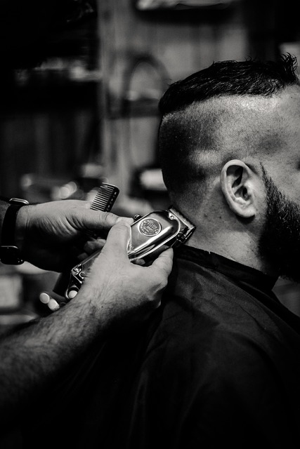

Nem mindegy, hova ülsz le
A 7. kerületben – a Dob utca, Kertész utca, Király utca és az Erzsébet körút környékén – egyre több barber shop nyílt az elmúlt években. Ez jó hír, de egyben azt is jelenti, hogy a kínálat nagyon vegyes. Vannak helyek, ahol valóban értenek a férfi hajvágáshoz és a szakállkezeléshez – és vannak, ahol csak annak látszanak.
Egy profi borbély nem csak a hajat vágja le, hanem megérti, mit szeretnél, és azt is elmondja, ha valami nem fog jól mutatni az arcformádon vagy a hajtípusodon. Ez a különbség a rutinszerű és a valóban jó szolgáltatás között.

Mit kínál egy profi barber shop a 7. kerületben?
Egy jól felszerelt barber shop nem csak hajvágásra alkalmas. Az alábbi szolgáltatások azok, amelyeket egy igényes helyen egy látogatás alatt is igénybe vehetsz.
Férfi hajvágás
Klasszikus frizurától a modern fade technikáig – ollóval és géppel, arcformához igazítva. Skin fade, mid fade, high fade, textured crop, undercut.
Szakálligazítás
Kontúrozás, formázás, egyenletesítés. Rövid stubble-tól a teljes szakállig – minden típushoz más technika és más megközelítés szükséges.
Klasszikus borotválás
Egyenes borotvával, meleg törülközővel, borotválkozás előtti és utáni kezeléssel. Egy tapasztalt borbélynál ez nem retró – hanem a legalaposabb borotválás, amit el lehet végezni.
Hajfestés
Ősz elfedése, highlights, természetes árnyalatok. Barber shopban a hajfestés mindig a hajvágással együtt, egységes összképben gondolkodik.

Mit nézz, mielőtt barber shopot választasz?
Ha a 7. kerületben keresel barber shopot – akár a Blaha Lujza tér közelében, akár a Dob utcában vagy a Klauzál téren –, érdemes néhány dolgot előre megnézni, mielőtt időpontot foglalsz.
- Van-e lehetőség konzultációra? – Egy jó borbély nem vágja le azonnal, amit mutatol, hanem megkérdezi az elvárásaidat és javaslatot tesz
- Milyen technikákban jártasak? – Fade, szakálligazítás, borotválás – ezek mind külön tudást igényelnek
- Mennyire következetes az eredmény? – Egy visszajáró vendég mindig ugyanolyan minőséget kap, nem csak egyszer volt jó
- Lehet-e előre foglalni? – Az online időpontfoglalás kényelmes, és azt is jelzi, hogy a hely szervezett
Bosphorus barber shop – a 7. kerületben
A Bosphorus barber shop Budapest 7. kerületében, a belváros szívében található. Könnyen elérhető a Blaha Lujza tértől, az Erzsébet körútról, a Dob utcából és a Király utcából egyaránt – az egyik legjobban megközelíthető pont a kerületben.
A Bosphorusban minden vendég konzultációval kezdi a látogatást. Ez nem formális – hanem egy rövid egyeztetés arról, mit szeretnél és mi fog jól mutatni rajtad. A borbélyok ismerik az összes modern férfi hajvágási technikát, a fade különböző változatait, a szakállkezelés fortélyait és a klasszikus borotválás menetét.
- Férfi hajvágás, szakálligazítás, borotválás és hajfestés egy helyen
- Skin fade, mid fade, high fade – minden fade technika profi szinten
- Konzultáció minden alkalommal – nem sablonmegoldást kapsz
- Online időpontfoglalás – könnyen és gyorsan
Foglalj időpontot a 7. kerületben
Ha profi borbélyt keresel Budapest belvárosában, a Bosphorus barber shop megbízható választás. Hajvágás, szakálligazítás, borotválás – egy helyen, következetes minőséggel.